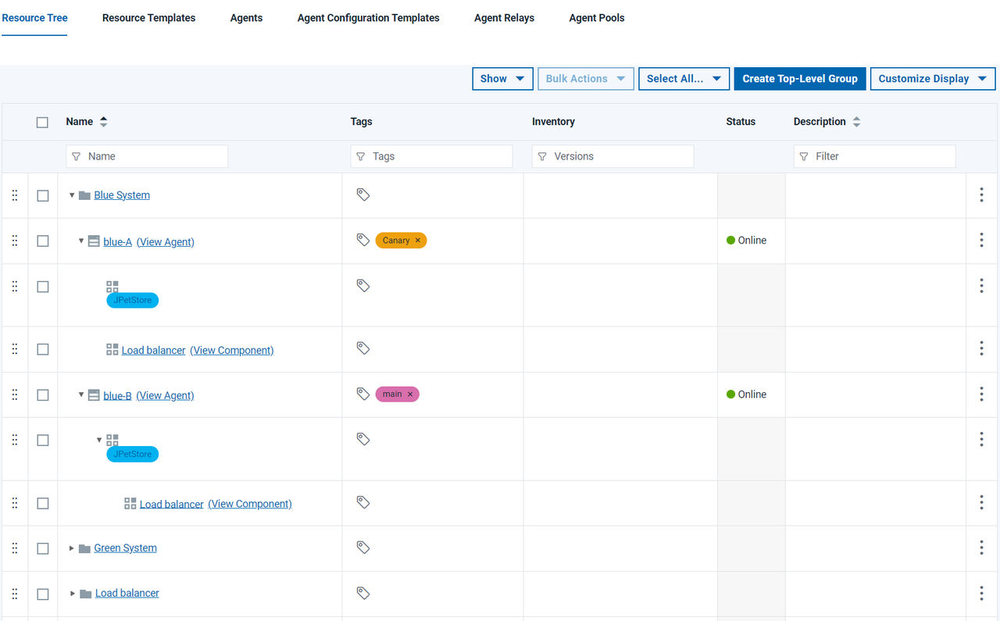

Lesson 1 Define resources
Create agent resources for a multi-node deployment.
Before you begin
About this task
In this tutorial you create two systems that are logically separate, but, for ease of use, run on the same hardware. The two environments behave in the same way and have the same dependencies.
To simulate separate physical environments, you can run the Blue and Green environments on the same server. If you have multiple servers available, of course you can use those. The Green resources run on one port, and the Blue resources run on another. This way, you can simply change the port to direct traffic to a different environment.
Deploy provides several loop-type steps that you can use to deploy multiple components. The For Each Agent loop, for instance, lets you control which agents run automated tasks. This way, even if you have a large number of agents, you can run tasks on specific agent groups by tagging agents and running tasks only on agents with those tags. The For Each Tag loop, which is similar, runs once for each of the resource tags that you specify. So you can organize the resources in your environment by tag, and then control which tags to use. For example, you can deploy to canary nodes first and all remaining nodes second, all in the same process.
Follow these steps to create the resource groups that represent the blue-green systems:
Procedure
Results

In this lesson, you created agent resources required by the blue-green topology.